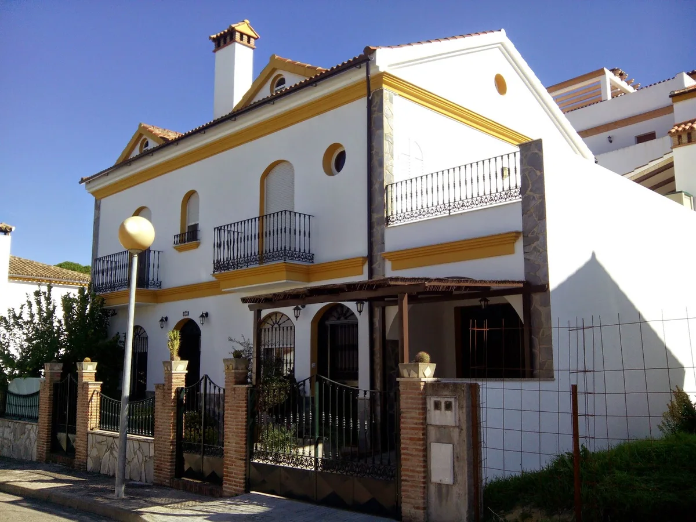

Alojamiento rural en El Bosque, Cádiz
Casa Sierra
de Cádiz.
En el número 20 de la calle Sierra de Cádiz.
Información y contacto directo con la casa.

Casa Sierra de Cádiz
Una mirada a la casa.
La dirección.
Casa Sierra de CádizCalle Sierra de Cádiz, 20
11670 El Bosque, CádizCómo llegar Abrir Google Maps
Hablamos.
Para consultar información sobre el alojamiento, contacta directamente por teléfono.
956 461 296